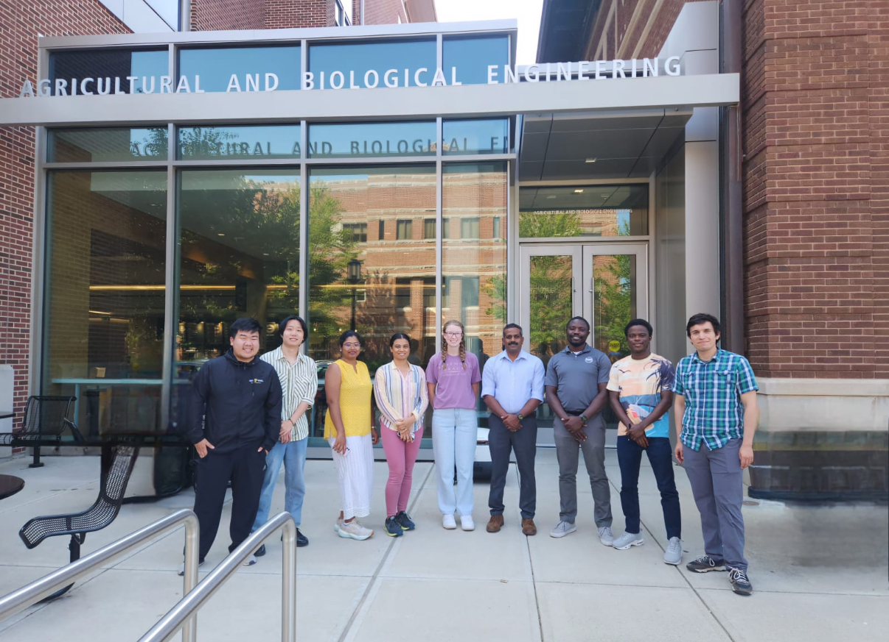

Agricultural Particulates Research Group
Welcome! Technology is a driving factor in providing a growing population of animals and humans with safer, more nutritious, and more convenient food. A number of food and feed products originate from or involve powder or granular materials. Our research group focuses on studying the properties of these materials and their behavior during processing. We use computational methods as well as specialized equipment to help us do this. Please have a look at our research areas on the next page!

Contact Us
Agricultural and Biological Engineering
Purdue University
25 S University St. West Lafayette, IN 47907
Phone: +1-765-494-6599
Email: rambrose@purdue.edu